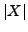

We develop a fast numerical algorithm for large scale zero-sum stochastic games with perfect information, which combines policy iteration and algebraic multigrid methods.
Consider a game on a finite state space  with discounted infinite horizon payoff.
Each pair of strategies of the two players determines a Markov chain on
with discounted infinite horizon payoff.
Each pair of strategies of the two players determines a Markov chain on  .
The value of the game satisfies the following dynamic programing equation:
.
The value of the game satisfies the following dynamic programing equation:
Equation ( ) may also be obtained after a suitable discretization
of Hamilton-Jacobi-Bellman or Isaacs partial differential equations :
) may also be obtained after a suitable discretization
of Hamilton-Jacobi-Bellman or Isaacs partial differential equations :
One can solve classically ( ) by applying
the fixed point method which is
known as the value iteration algorithm.
The iterations are cheap but their convergence
slows considerably
as approaches one, which holds
when the discretization step
) by applying
the fixed point method which is
known as the value iteration algorithm.
The iterations are cheap but their convergence
slows considerably
as approaches one, which holds
when the discretization step  for (
for ( ) is small,
since then
.
Another approach consists in the following
algorithm called policy iteration, initially introduced by Howard
(60) for one player games.
) is small,
since then
.
Another approach consists in the following
algorithm called policy iteration, initially introduced by Howard
(60) for one player games.
A policy for the first player maps any to an action . Given an initial policy , the policy iteration applies successively the two following steps:
The first step is performed itself using the policy iteration algorithm for a one-player game. The sequence of the external loop (resp. the sequence of values of the internal loop) is non decreasing (resp. non increasing) and stops after a finite time when the sets of actions are finite. Under regularity assumptions, the policy iteration algorithm for a one player game with infinite action spaces is equivalent to Newton's method, thus can have a super-linear convergence in the neighborhood of the solution.
In all cases, this method converges faster than the
value iterations and in practice it ends in few steps
(see for instance large scale random examples for deterministic games
in Dhingra, Gaubert, 2006).
In each internal iteration of the policy iterations, one needs to
solve a linear system of equations,
the dimension of which is equal to the cardinality  of the state space
 .
When (
.
When ( ) is coming from the discretization of the
Isaacs partial differential equation
(
) is coming from the discretization of the
Isaacs partial differential equation
( ), these linear systems correspond to discretizations of linear
elliptic equations, hence may be solved in the
best case in a time in the order of ,
by using multigrid methods.
In general, using the nice monotonicity properties of these linear
systems, one may expect the same complexity when solving
them by an algebraic multigrid method.
), these linear systems correspond to discretizations of linear
elliptic equations, hence may be solved in the
best case in a time in the order of ,
by using multigrid methods.
In general, using the nice monotonicity properties of these linear
systems, one may expect the same complexity when solving
them by an algebraic multigrid method.
We have implemented (in C) the policy iteration algorithm in which linear systems are solved using a fixed or adapted number of iterations of the algebraic multigrid method of Ruge and Stüben (86). This algorithm can be applied either to a true finite state space zero-sum two player game or to the discretization of an Isaacs equation. Such an association of multigrid methods with policy iteration has already been used and studied in the case of one player, that is in the case of discounted stochastic control problems (see the ancient works of Hoppe (86,87) and Akian (88, 90) on Hamilton-Jacobi-Bellman equations, and the recent work of Ziv and Shimkin (05) on algebraic multigrid methods associated to learning methods). However, the association with the policy iteration for games is new. We shall present numerical tests on discretizations of Isaacs or Hamilton-Jacobi-Bellman equations or variational inequalities.
The complexity of policy iteration algorithms is still unsettled. Recall that the number of iterations is bounded by the number of possible strategies, which is exponential in . Moreover, in some reachability (or pursuit-evasion) games, the number of iterations is typically of the order of the diameter of the domain. As for Newton's algorithm, convergence can be improved by starting the policy iteration with a good initial guess, close to the solution. In this way, we developed a full multi-level scheme, similar to FMG. It consists in solving the problem at each grid level by performing policy iterations (combined with algebraic multigrid method) until a convergence criterion is verified, then to interpolate the strategies and value to the next level, in order to initialize the policy iterations of the next level, until the finest level is attained. Numerical examples on variational inequalities show that the execution time can be much improved using this full multi-level scheme.